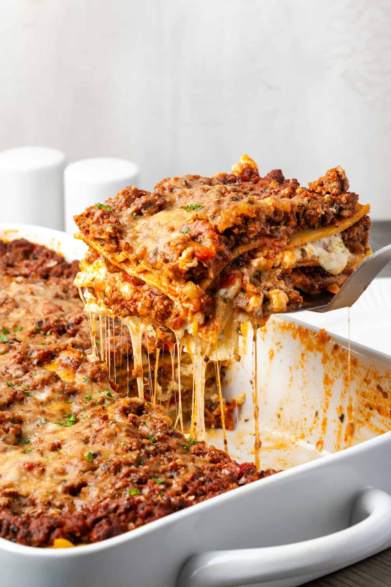
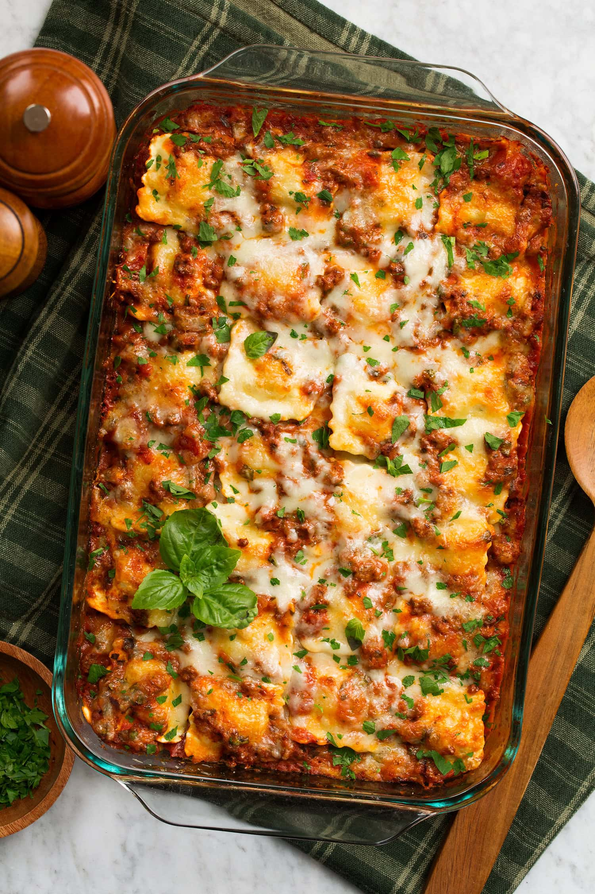
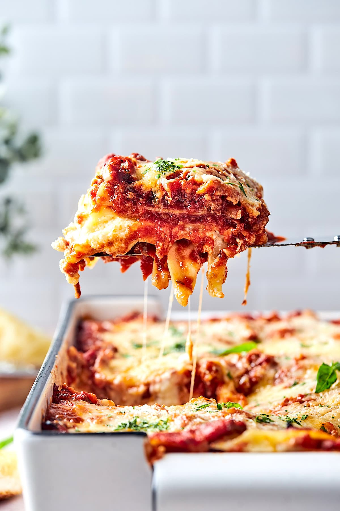

Lasanga
Home



Description
Lasagna is a traditional Italian dish made with
layers of pasta, meat sauce, tomato sauce, and cheese.
It is baked in an oven until the cheese becomes
golden and delicious.
Ingredients
- Lasagna noodles
- Ground beef
- Tomato sauce
- Onion
- Garlic
- Mozzarella cheese
- Ricotta cheese
- Salt
- Black pepper
Steps
- Preheat the oven to 180°C.
- Cook the lasagna noodles according
to the package instructions.
- Cook the ground beef with onion and garlic.
- Add tomato sauce and season with salt
and black pepper.
- Layer the noodles, meat sauce,
ricotta cheese, and mozzarella cheese.
- Repeat the layers until all ingredients
are used.
- Bake for 35-40 minutes until the cheese
becomes golden.
- Allow it to cool slightly before serving.